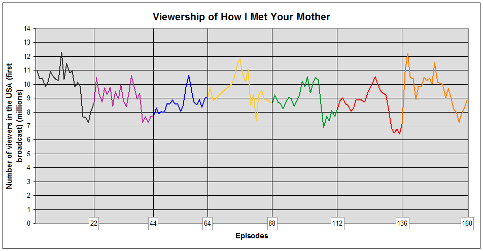
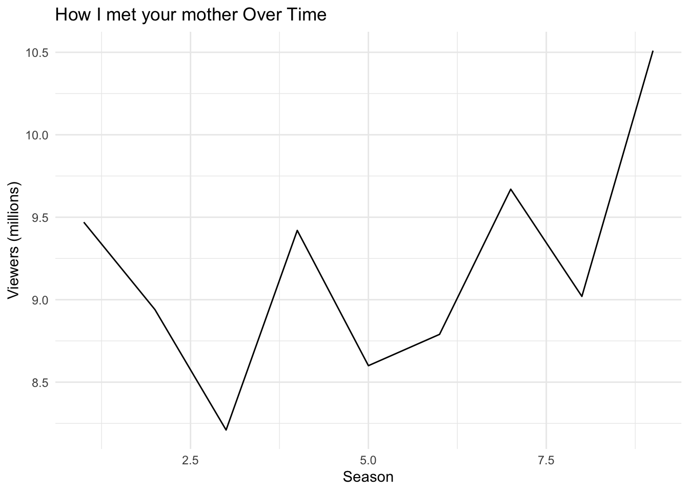

```{r}
library(chron)
```Warning: package 'chron' was built under R version 4.1.2```{r}
library(reticulate)
``````{r}
library(chron)
```Warning: package 'chron' was built under R version 4.1.2```{r}
library(reticulate)
```How I Met Your Mother (often abbreviated as HIMYM) is an American sitcom, created by Craig Thomas and Carter Bays for CBS. The series, which aired from September 19, 2005 to March 31, 2014, follows the main character, Ted Mosby, and his group of friends in New York City’s Manhattan.
I was not sure how viewership should be provided, thus there will be 2 versions - one is a inserted picture and another is plotted graph with csv file and R code

Warning: package 'ggplot2' was built under R version 4.1.2
The show’s viewership saw some fluctuations over its run. The series premiered with 10.94 million viewers in its first season1. The viewership peaked in season 2 with 12.27 million viewers2 and then experienced a decline, reaching its lowest point in season 6 with 8.31 million viewers3. The show’s viewership then saw a slight increase in later seasons, with season 9 averaging 9.39 million viewers4.